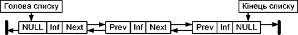

Динамічні структури даних. Списки
Лінійні списки
Лінійнісписки є узагальненням попередніх структур; вони дозволяють представити множинутак, щоб кожний елемент був доступний і при цьому не потрібно було б зачіпатидеякі інші.
Спискиє досить гнучкою структурою даних, так як їх легко зробити більшими абоменшими, і їх елементи доступні для вставки або вилучення в будь-якій позиціїсписку. Списки також можна об’єднувати або розділяти на менші списки.
Лінійний список - це скінчена послідовність однотипних елементів(вузлів), можливо, з повторенням. Кількість елементів у послідовностіназивається довжиною списку. Вона в процесі роботи програми може змінюватися.Лінійний список L, що складається з елементів d, d2,•••, dn, якімають однаковий тип, записують у вигляді
L = { d, d2,•••, d„), або зображають графічно.
Важливоювластивістю лінійного списку є те, що його елементи можна лінійно впорядкуватиу відповідності з їх позицією в списку.
Дляформування абстрактного типу даних на основі математичного визначення спискупотрібно задати множину операторів, які виконуються над об’єктами типу список.Проте не існує однієї множини операторів, які виконуються над списками, якізадовольняють відразу всі можливі застосування.
Найчастішезі списками доводиться виконувати такі операції:
- Знайти елемент із заданоювластивістю;
- Визначити і-й елемент у лінійномусписку;
- Внести додатковий елемент до абопісля вказаного вузла;
- Вилучити певний елемент списку;
- Впорядкувати вузли лінійногосписку в певному порядку.
Уреальних мовах програмування не існує якої-небудь структури даних длязображення лінійного списку так, щоб усі операції над ним виконувалися воднаковій мірі ефективно. Тому при роботі з лінійними списками важливе значеннямає подання лінійних списків, які використовуються в програмі, таким чином, щоббула забезпечена максимальна ефективність і за часом виконання програми, і заобсягом потрібної їй пам’яті.
Лінійнийсписок є послідовність об’єктів. Позиція елемента в списку має інший тип даних,відмінний від типу даних елемента списку, і цей тип залежить від конкретноїфізичної реалізації.
Надлінійним списком допустимі наступні операції.
Операціявставки - вставляє елемент в конкретну позицію в списку, переміщуючи елементивід цієї позиції і далі в наступну, більш вищу позицію.
Операціялокалізації - повертає позицію об’єкта в списку. Якщо в списку об’єктзустрічається декілька разів, то повертається позиція першого від початкусписку об’єкта. Якщо об’єкта немає в списку, то повертається значення, якерівне довжині списку, збільшене на одиницю.
Операціявибірки елемента з списку - повертає елемент, який знаходиться в конкретнійпозиції списку. Результат не визначений, якщо в списку немає такої позиції.
Операціявилучення - вилучає елемент в конкретній позиції зі списку. Результатневизначений, якщо в списку немає вказаної позиції.
Операціївибірки попереднього і наступного елемента - повертають відповідно наступній іпопередній елемент списку відносно конкретної позиці в списку.
Функціяочистки списку робить список пустим.
Основніметоди зберігання лінійних списків поділяються на методи послідовного ізв’язного зберігання. При виборі способу зберігання в конкретній програмі слідвраховувати, які операції і з якою частотою будуть виконуватися над лінійнимисписками, вартість їх виконання та обсяг потрібної пам’яті для зберігання списку.
Найпростішаформа представлення лінійного списку — це вектор. Визначивши таким чином списокможна по чергово звертатися до них в циклі і виконувати необхідні дії. Однакпри такому представленні лінійного списку не вдасться уникнути фізичногопереміщення елементів, якщо потрібно добавляти нові елементи, або вилучатиіснуючі. Набагато швидше вилучати елементи можна за допомогою простої схемичистки пам’яті. Замість вилучення елементів із списку, їх помічають якневикористані.
Більшскладною організацією при роботі зі списками є розміщення в масиві декількохсписків або розміщення списку без прив’язки його початку до першого елементамасиву.
Призв’язному представленні лінійного списку кожен його елемент складається іззначення і покажчика, який вказує на наступний елемент у списку.
На наступному рисунку приведена структура однозв’язного списку. Кожнийсписок повинен мати особливий елемент, який називається покажчиком на початоксписку, або головою списку.
Голова списку -----
Проте,обробка однозв’язного списку не завжди зручна, оскільки відсутня можливістьпросування в протилежну сторону. Таку можливість забезпечує двох - зв’язнийсписок, кожний елемент якого містить два покажчики: на наступний і попереднійелементи списку.
Длязручності обробки списку додають ще один особливий елемент - покажчик кінцясписку. Наявність двох покажчиків в кожному елементі ускладнює список іприводить до додаткових витрат пам’яті, але в той же час забезпечує більшефективне виконання деяких операцій над списком.
Різновидом розглянутих видів лінійних списків є кільцевий список, якийможе бути організований на основі як однозв’язного, так і двох-зв’язногосписків. При цьому в однозв’язному списку покажчик останнього елемента повиненвказувати на перший елемент; в двох-зв’язному списку в першому і останньомуелементах відповідні покажчики змінюються.

Прироботі з такими списками дещо спрощуються деякі процедури, проте, при переглядітакого списку слід приймати деякі запобіжні засоби, щоб не потрапити внескінченний цикл.
Впам’яті список є сукупністю опису однакових за розміром і форматом структур,які розміщені довільно в деякій ділянці пам’яті і пов’язані одна з одною влінійно впорядкований ланцюжок за допомогою покажчиків. Структура міститьінформаційні поля і поля покажчиків на сусідні елементи списку, причому деякимиполями інформаційної частини можуть бути покажчики на блоки пам’яті здодатковою інформацією, що відноситься до елемента списку.
Розглянемодеякі прості операції над лінійними списками.
Вставка елемента в середину однозв’язного списку:

Вставка елемента в двох-зв’язний список:

Наведені приклади забезпечують вставку в середину списку, але не можутьбути застосовані для вставки на початок списку. При такій операції повиненмодифікуватися покажчик на початок списку:

Видалення елемента з однозв’язного списку для двох варіантів - зсередини і з голови:

Видалення елемента з двох-зв’язного списку вимагає корекції більшоїкількості покажчиків:

Процедуравидалення елемента з двох-зв’язного списку виявиться навіть простішою, ніж дляоднозв’язного, оскільки в ній не потрібно шукати попередній елемент, вінвибирається за покажчиком назад.
Змінність динамічних структур даних допускає не тільки зміни розміруструктури, але і зміни зв’язків між елементами. Для зв’язних структур зміназв’язків не вимагає пересилки даних в пам’яті, а тільки зміни покажчиків велементах зв’язної структури. В якості прикладу приведена перестановка двох сусідніхелементів списку. В алгоритмі перестановки в однозв’язному списку виходили зтого, що відома адреса елемента, який передує парі, в якій проводитьсяперестановка. В приведеному алгоритмі також не враховується випадокперестановки початкових елементів списку.

У процедурі перестановки для двох-зв’язного списку неважко врахувати іперестановку на початку списку.
Мультисписки
Впрограмних системах, які обробляють об’єкти складної структури, можутьвирішуватися різні підзадачі, кожна з яких вимагає обробки можливо не всієїмножини об’єктів, а лише якоїсь його підмножини.
Длятого, щоб при вибірці кожної підмножини не виконувати повний перегляд звідсіванням записів, які до необхідної підмножини не відносяться, в кожнийзапис включаються додаткові поля посилань, кожне з яких зв’язує в лінійнийсписок елементи відповідної підмножини. В результаті виходить багато-зв’язковийсписок або мультисписок, кожний елемент якого може входити одночасно в декількаоднозв’язних списків.
Допереваг мультисписків крім економії пам’яті (при множині списків інформаційначастина існує в єдиному екземплярі) слід віднести також цілісність даних - втому сенсі, що всі підзадачі працюють з однією і тією ж версією інформаційноїчастини і зміни в даних, зроблені одній підзадачей негайно стають доступнимидля іншої підзадачі.
Кожна підзадача працює з своєю підмножиною як з лінійним списком,використовуючи для цього певне поле зв’язку. Специфіка мультисписку виявляєтьсятільки в операції виключення елемента із списку. Виключення елемента з якого-небудь одного списку ще не означає необхідності видалення елемента з пам’яті,оскільки елемент може залишатися у складі інших списків. Пам’ять повинназвільнятися тільки у тому випадку, коли елемент вже не входить ні в один зприватних списків мультисписку. Звичайно задача видалення спрощується тим, щоодин з приватних списків є головним - в нього обов’язково входять всі наявніелементи. Тоді виключення елемента з будь-якого неголовного списку полягаєтільки в зміні покажчиків, але не в звільненні пам’яті. Виключення ж зголовного списку вимагає не тільки звільнення пам’яті, але і зміні покажчиківяк в головному списку, так і у всіх неголовних списках, в які елемент, щовидаляється, входив.
Стрічки
Стрічка- це лінійно впорядкована послідовність символів, які належать до скінченоїмножини символів, яка називається алфавітом.
Стрічкимають наступні важливі властивості:
- їхня довжина, як правило, змінна,хоч алфавіт фіксований;
- звичайне звернення до символівстрічки йде з будь-якого одного боку послідовності (важлива впорядкованістьпослідовності, а не її індексація);
- метою доступу до стрічки є наокремий її елемент, а ланцюжок символів.
Кажучипро стрічки, звичайно мають на увазі текстові стрічки - стрічки, що складаютьсяз символів, які входять в алфавіт якої-небудь вибраної мови, цифр, розділовихзнаків і інших службових символів. Текстова стрічка є найбільш універсальноюформою представлення будь-якої інформації.
Хочастрічки й розглядаються в частині, яка присвячена напівстатичним структурамданих, в тих або інших конкретних задачах змінність стрічок може варіюватисявід повної її відсутності до практично необмежених можливостей зміни.Орієнтація на ту чи іншу міру мінливості стрічок визначає і фізичнепредставлення їх в пам’яті і особливості виконання операцій над ними. Вбільшості мов програмування стрічки представляються саме як напівстатичніструктури.
Базовимиопераціями над стрічками є:
- визначення довжини стрічки;
- присвоєння стрічки;
- конкатенація (зчеплення) стрічок;
- виділення підстрічки;
- пошук входження.
Операціявизначення довжини стрічки має вид функції, яка повертає значення - ціле число- поточна кількість символів в стрічці. Операція присвоєння має такий же сенс,що і для інших типів даних.
Операціяпорівняння стрічок має такий же сенс, що і для інших типів даних. Порівняннястрічок проводиться за наступними правилами. Порівнюються перші символи двохстрічок. Якщо символи не рівні, то стрічка, що містить символ, місце якого валфавіті ближче до початку, вважається меншою. Якщо символи рівні, порівнюютьсядругі, треті і т.д. символи. При досягненні кінця в одній з стрічок стрічкаменшої довжини вважається меншою. При рівності довжин стрічок і попарнійрівності всіх символів в них стрічки вважаються рівними.
Результатомоперації зчеплення двох стрічок є стрічка, довжина якої рівна сумарній довжиністрічок-операндів, а значення відповідає значенню першого операнда, за якимбезпосередньо слідує значення другого операнда.
Операціявиділення підстрічки виділяє з початкової стрічки послідовність символів,починаючи із заданої позиції, із заданою довжиною.
Операціяпошуку входження знаходить місце першого входження підстрічки еталону впочаткову стрічку. Результатом операції може бути номер позиції в початковійстрічці, з яким починається входження еталону або покажчик на початоквходження. У разі відсутності входження результатом операції повинне бути деякеспеціальне значення, наприклад, від’ємний номер позиції або порожній покажчик.
Найпростішимспособом є представлення стрічки у вигляді вектора постійної довжини. При цьомув пам’яті відводиться фіксована кількість байт, в які записуються символистрічки. Якщо стрічка менша відведеного під неї вектора, то зайві місцязаповнюються пропусками, а якщо стрічка виходить за межі вектора, то зайві(праві) символи повинні бути відкинуті.
Можливепредставлення стрічки вектором змінної довжини з ознакою завершення. Цей і всіподальші за ним методи враховують змінну довжину стрічок. Ознака завершення -це особливий символ, який належить до алфавіту (таким чином, корисний алфавітвиявляється меншим на один символ), і займає ту ж кількість розрядів, що і всіінші символи. Витрати пам’яті при цьому способі складають 1 символ на рядок.
Окрімознаки завершення можна використати лічильник символів - це ціле число, і для ньоговідводиться достатня кількість бітів, щоб їх з надлишком вистачало дляпредставлення довжини найдовшої стрічки, яку можна представити. Привикористовуванні лічильника символів можливий довільний доступ до символів вмежах стрічки.
Представленнястрічок списком у пам’яті забезпечує гнучкість у виконанні різноманітнихоперацій над ними (зокрема, операцій включення і виключення окремих символів іцілих ланцюжків) і використовування системних засобів управління пам’яттю привиділенні необхідного об’єму пам’яті для стрічки. Проте, при цьому виникаютьдодаткові затрати пам’яті. Іншим недоліком такого представлення стрічок є те,що логічно сусідні елементи стрічки не є фізично сусідніми в пам’яті. Цеускладнює доступ до груп елементів стрічки в порівнянні з доступом у векторномупредставленні.
Припредставленні стрічки однозв’язним лінійним списком кожний символ стрічкипредставляється у вигляді елемента зв’язного списку; елемент містить кодсимволу і покажчик на наступний елемент. Одностороннє зчеплення представляєдоступ тільки в одному напрямі уздовж стрічки.
Привикористанні двох-зв’язних лінійних списків у кожний елемент списку додаєтьсятакож покажчик на попередній елемент. Двостороннє зчеплення допускаєдвосторонній рух уздовж списку, що може значно підвищити ефективність виконаннядеяких стрічкових операцій.
Блочно-зв’язне представлення стрічок дозволяє в більшості операційуникнути витрат, які пов’язані з управлінням динамічною пам’яттю, але в той жечас забезпечує достатньо ефективне використовування пам’яті при роботі зстрічками змінної довжини.